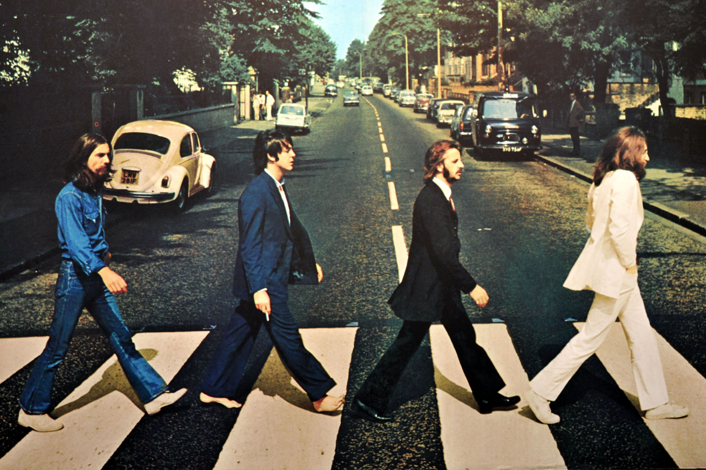

 Об этой группе написано столько, что вряд ли нам удалось бы добавить что-либо новое. На нашем сайте вы найдете историю создания группы, биографии участников, дискографию и фильмографию группы. Мы предлагаем вашему вниманию только достоверную информацию. Это учебный сайт демонстрационного содержания. Его цель - отработка технологии разметки гипертекстовых документов с помощью языка HTML. Более полную информацию о группе The Beatles вы найдете на других сайтах. Приносим свои извинения.